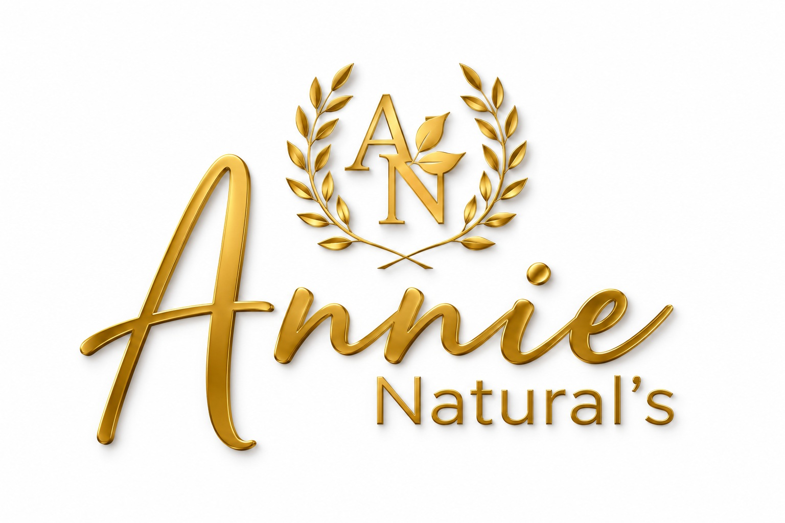
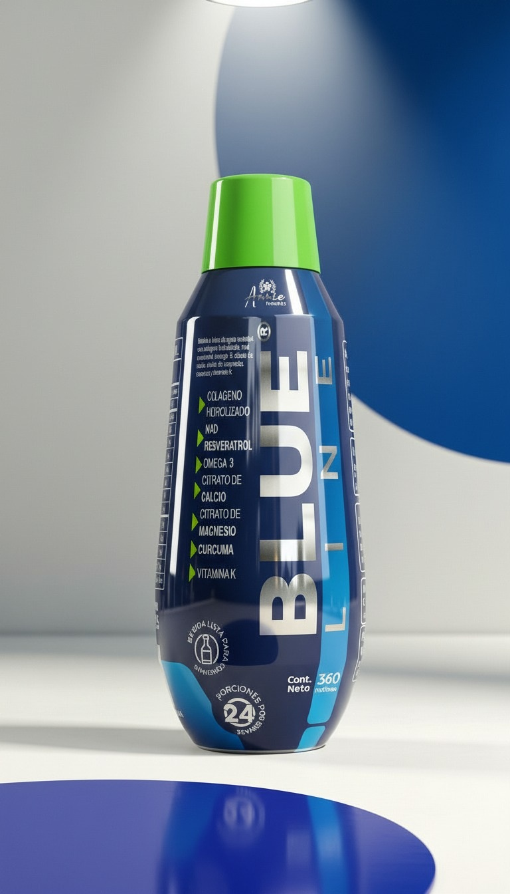
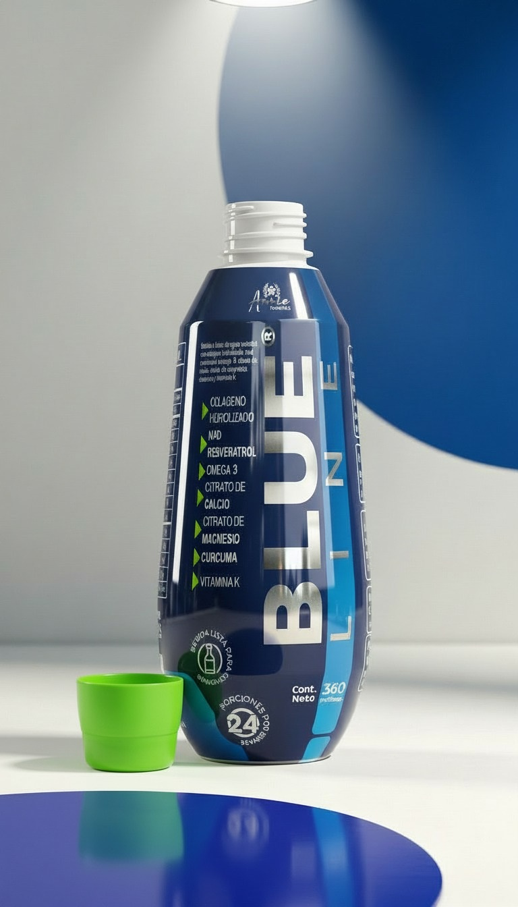
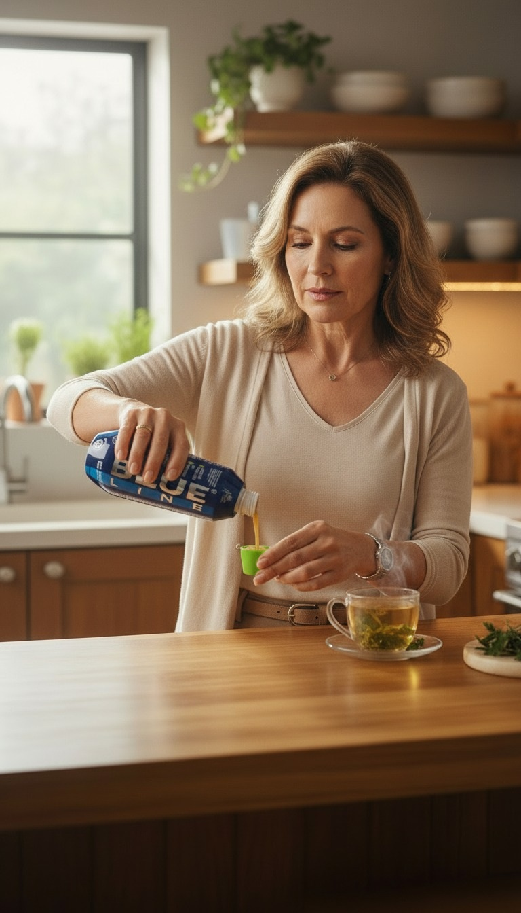

Blue Line es un suplemento alimenticio líquido formulado para complementar estilos de vida activos y apoyar el bienestar articular, muscular y óseo.

Personas en Colombia han incorporado Blue Line a su rutina de bienestar.
Ayuda a favorecer la movilidad articular.
Apoya el bienestar muscular diario.
Contribuye a una mejor elasticidad corporal.
Complementa estilos de vida activos.
Apoya el mantenimiento óseo.
Incluye ingredientes con acción antioxidante.
Despachos desde Ibagué a todo Colombia.


Experiencias de personas que han incorporado Blue Line a su rutina diaria.
"Me gustó la facilidad de consumo y la atención recibida por WhatsApp."
"Llegó rápido y lo incorporé fácilmente a mi rutina diaria."
"Buscaba una opción práctica y la presentación líquida me pareció excelente."
Los resultados pueden variar según cada persona.
Se recomienda seguir las instrucciones indicadas en la etiqueta del producto.
Está dirigido a personas mayores de 14 años.
No. Blue Line es un suplemento alimenticio líquido diseñado para complementar estilos de vida activos.
Sí. Realizamos envíos nacionales según cobertura de la transportadora.
Puedes comunicarte directamente con nosotros a través de WhatsApp para recibir asesoría personalizada.
🚚 Envíos a todo Colombia desde Ibagué
⏱️ Entrega estimada: 3 días hábiles